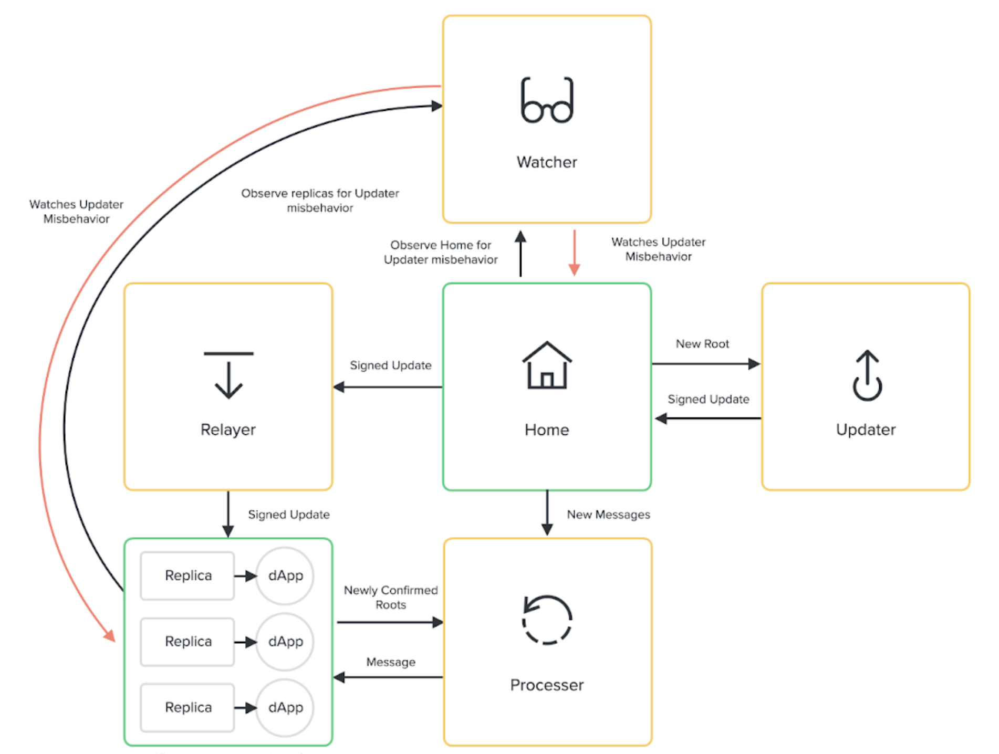

Optics is Here
Optics is a new optimistic multi-chain communication standard developed by the Optics Core team at cLabs. Check out the release blog post on the Celo Medium blog here!
This release coincides with DeFi For the People, a truly massive incentive campaign that aims to attract dApp developers to the Celo Ecosystem along with their killer dApps!
Now that Optics has been deployed to Mainnet Ethereum, Celo, and Polygon, many are asking the obvious question:
"Brother, how do I Ape?"
Read on dear Primate Friend, for in this blog post we will cover how to send ERC-20 tokens over the Optics bridge (and be ready to take advantage of the soon-to-be-announced liquidity incentives) via Etherscan in lieu of a dedicated Optics GUI (which is actively in development!).
Note: Bridging native assets (like ETH and MATIC) involves a slightly different (but very similar) process and will be discussed in a subsequent blog post.
READ THIS NOTE: ⚠️ Optics is still an experimental technology. We are deploying it for the first time in mainnet environments, so it’s important to carefully evaluate the risks and only transact with funds you’re willing to play with! ⚠️
What We Need To Know
NOTE: Did you read the notes in the previous section? Good.
Optics is a highly complex mesh of inter-connected smart contracts, which we will mostly be glossing over in favor of aping ERC-20 tokens onto the bridge and reaching multi-chain enlightenment as fast as possible. If you are interested in learning more (and you should be), here are some links to the Optics documentation in the github repo:
At a high-level we will need to do the following:
- Authorize the Bridge to spend your tokens.
- Call the bridge to send your tokens.
- Wait patiently!
Now, lets get a little clarity and build understanding about the parts we need to know about.

The Home Contract
The Home contract is a hub of one-way communication between itself and replica contracts on an arbitrary number of remote blockchains. Messages are persisted to the Home blockchain by a "Cross-Chain App" (aka a xApp), and ferried to the replicas by a series of off-chain agents.
It is important to note that message-passing is not instantaneous, as there is a ~3-hour dispute period that must elapse, in addition to any confirmation time on the home chain, to see messages processed on a replica chain.
Contract addresses for the mainnet Home and other core contracts can be found in the Optics Github Repository here.
The Token Bridge
Now that we know roughly how an Optics channel works, we can discuss the most important component to a quickly evolving Bridge Ape -- The Token Bridge.
The Token Bridge is a xApp, the first of its kind in the Optics Ecosystem, that facilitates token transfers between blockchains. If you know how to call its methods via Etherscan, you can send tokens across the bridge.
Contract addresses for the various components of the Token Bridge can be found here.
The ERC-20 Token
The ERC-20 Token Standard is an ingenious design that allows anyone to produce a fungible token that can fulfill a variety of functions. These tokens are programmable and composable, allowing for basic things like transfers between accounts and balance inquiries, but also complex functionality like the ability to approve that an amount can be spent on behalf of a holder by a third party account.
The Optics Token Bridge facilitates the transfer of ERC-20 Tokens between blockchains. It does this by withdrawing the bridged token via the approval functionality (which we will discuss in detail in the next section), locking the token on the originating chain, and issuing an equivalent ERC-20 on the destination blockchain.
Etherscan
Etherscan is a great tool for the Ethereum ecosystem. One feature that is well-known to DeFi Apes is the ability to natively call smart contract methods for any smart contract via a Metamask integration. We can utilize this functionality to our benefit to send tokens from Ethereum to Celo.
It is important to note that this functionality is available on any blockchain where Etherscan is deployed. Since Etherscan is not deployed to Celo, you will not be able to send your tokens back to the originating chain via Metamask until the Optics GUI is released. But, you didn't want to send them back anyways, right?
I am Become Bridge Ape
We're almost to the point where we have enough information to become one with the bridge and achieve enlightenment.

Step One: Locate the Contract for the Token You're Bridging
First, we need to authorize the Token Bridge to spend our tokens on our behalf. In order to do this, we need to let the Token Contract know via the approve method on the contract (a part of the ERC-20 standard).
In order to view the implementation details of a contract, select the "Contract" tab.
Note: The green checkmark indicates that the source code of the contract has been verified on Etherscan.
The token addresses for my favorite ETH Tokens are below:
For the purposes of this blog post we will be bridging USDT, however the process will be nearly identical for any ERC-20 token.
Step Two: Locate the Bridge Router Contract
As mentioned in the previous section, bridge contract addresses on each blockchain can be found here.
Optics is deployed in an upgradeable configuration, with implementation contracts being pointed to by proxy contracts. This allows us to upgrade the contract implementation via governance without having to migrate contract state (which lives in the proxy).
We want to interact with the BridgeRouter proxy contract which can be found on Etherscan here.
Step Three: Understand the Token's Approve Method
Click around the Etherscan UI until you have the approve method expanded.
The ERC-20 approve method takes two arguments:
_spender- The address which we want to grant the ability to spend our tokens_value- The number of tokens we want to grant the ability to spend, denominated in that token's smallest unit. For most tokens this is 10^18, however for USDT it is 10^6! The+button will help you fill in the right number.
Note: approving too much is usually ok, but not approving enough will cause the subsequent bridge transaction to fail.
Example values we will use here are as follows:
_spender:0x6a39909e805A3eaDd2b61fFf61147796ca6aBB47_amount:10000000
This will authorize the BridgeRouter to spend 10 USDT.
Step Two: Locate the BridgeRouter's "Send" Method
As mentioned, the contract we're looking at is a proxy, so we want to write to it using the "Write as Proxy" feature.

There is a list of methods available to us, the most important one to a Bridge Ape is the send method.
Selecting the send method expands the list of parameters which we will have to accurately fill in order to successfully send tokens across the bridge.
Step Three: Understand the Send Method
There are a series of parameters for the send method which we will have to fill out in order to Ape tokens across the bridge.

_token- The Contract Address of the ERC-20 token which we will be bridging._amount- The amount of the token to send, denominated in that token's smallest unit._destination- The domain of the destination chain. Domain IDs are like phone numbers, they are unique to each chain.- A list of domains IDs can be found in the Ethereum replica configuration on Github.
- After examining that, we know that Celo's domain ID is
1667591279.
_recipient- The address of the recipient on the remote chain, bridged tokens will be sent to this address.- To help support future chains with longer addresses, Optics uses 32-byte addresses.
- To convert an Ethereum, Celo, or Polygon address to bytes32 you can add 24 0's after the 0x Prefix.
0x6a39909e805A3eaDd2b61fFf61147796ca6aBB47would become0x0000000000000000000000006a39909e805A3eaDd2b61fFf61147796ca6aBB47
NOTE: Do not use the example recipient address in the following examples, make sure to use an address you control or else you will lose access to yor bridged tokens.
Example Parameters for Bridging USDT from Ethereum to Celo are as follows:
_token:0xdac17f958d2ee523a2206206994597c13d831ec7_amount:10000000// 10 USDT_destination:1667591279_recipient:0x0000000000000000000000006a39909e805A3eaDd2b61fFf61147796ca6aBB47
Step Four: Connect Metamask
Using the Metamask integration within Etherscan, we can use the parameters above to submit a transaction that sends bridged tokens.
First, select the "Connect to Web3" button on the contract UI.
Select Metamask
Then, walk through the Metamask connector flow by selecting an address.
Confirm the selection and connect.

You should see that metamask is now reporting it is connected with the current website.

You can verify this in Etherscan as well, you might have to click the "Connect to Web3" button again in order to get it to pick up the change.
If all of this was successful, you are ready for true Enlightenment.
Step Five: APE!
Now, we can put it all together.
- Authorize BridgeRouter to spend your USDT via USDT Contract
_spender:0x6a39909e805A3eaDd2b61fFf61147796ca6aBB47// Ethereum BridgeRouter Address_amount:10000000// 10 USDT
- Send Tokens via BridgeRouter Contract
_token:0xdac17f958d2ee523a2206206994597c13d831ec7// USDT Contract Address_amount:10000000// 10 USDT_destination:1667591279// CELO Domain_recipient:0x0000000000000000000000006a39909e805A3eaDd2b61fFf61147796ca6aBB47- Please for the love of Ape -- use your own address here
Step Six: Wait Patiently
Through your hard work and understanding the heavens have aligned -- You see Bridge Nirvana. You are now one with The Bridge. Your universal consciousness has become untethered from the worldly shackles of one particular blockchain and you can now be truly free.
You have achieved true Bridge Ape Enlightenment. You are become Bridge Ape.
Make yourself a coffee, and also probably some lunch and maybe even a snack. In about 3 hours your bridged tokens will arrive in your wallet, ready for providing liquidity or swapping, or whatever purpose your big giant galaxy brain can come up with.
Step Seven: Let Me Know How It Went!
Seriously, I would love to hear from you.
I have so many questions for you!
- What tokens did you bridge?
- How long did it take?
- How was your experience Aping via Etherscan?
- Can you hear my thoughts now?
Reach out to me on Twitter, lets be friends!
And seriously, thank you for trying this out, it means a lot!